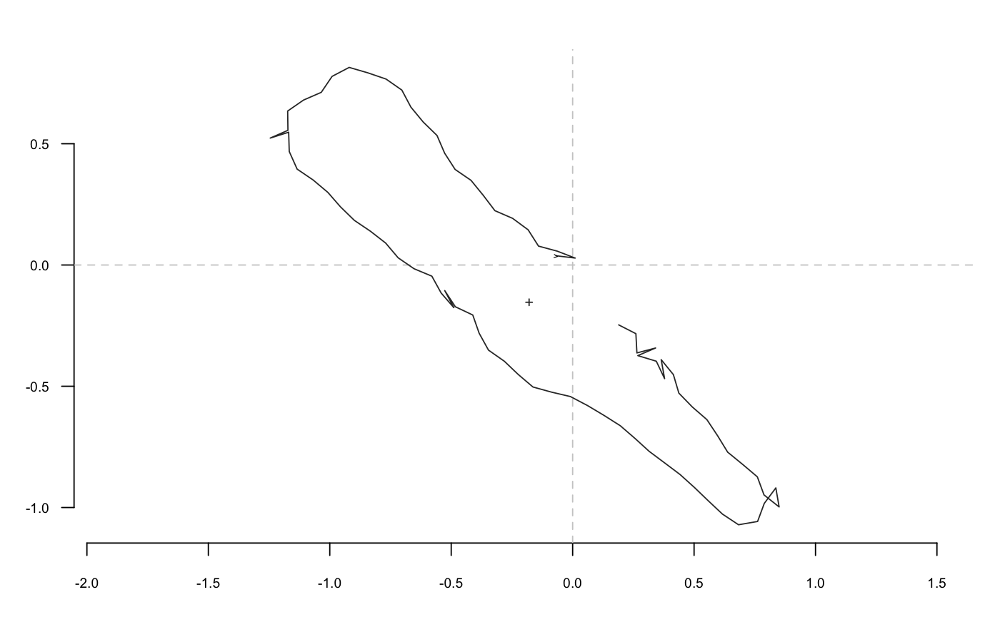
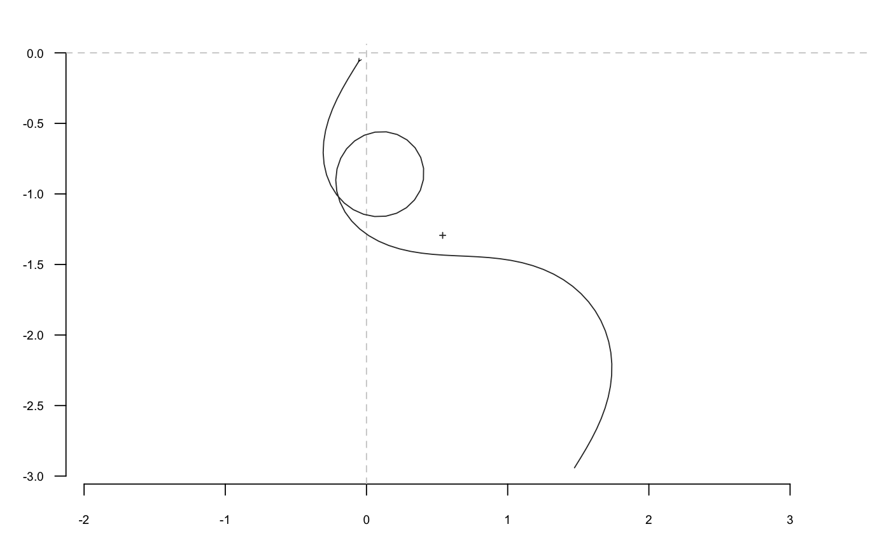
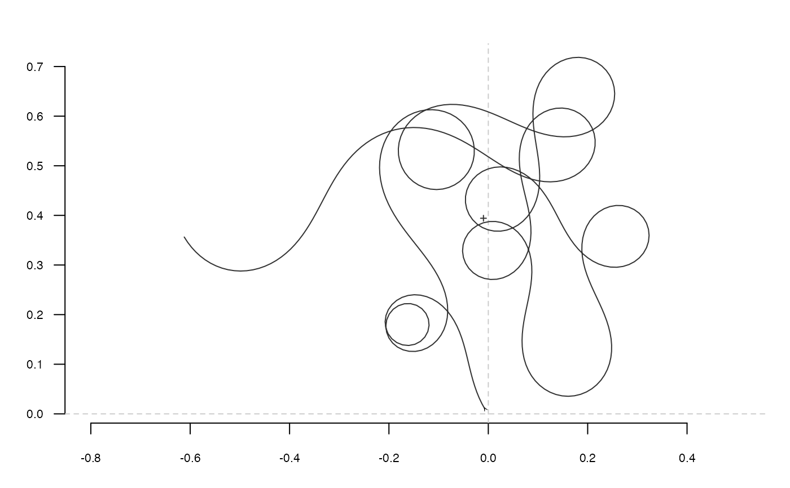
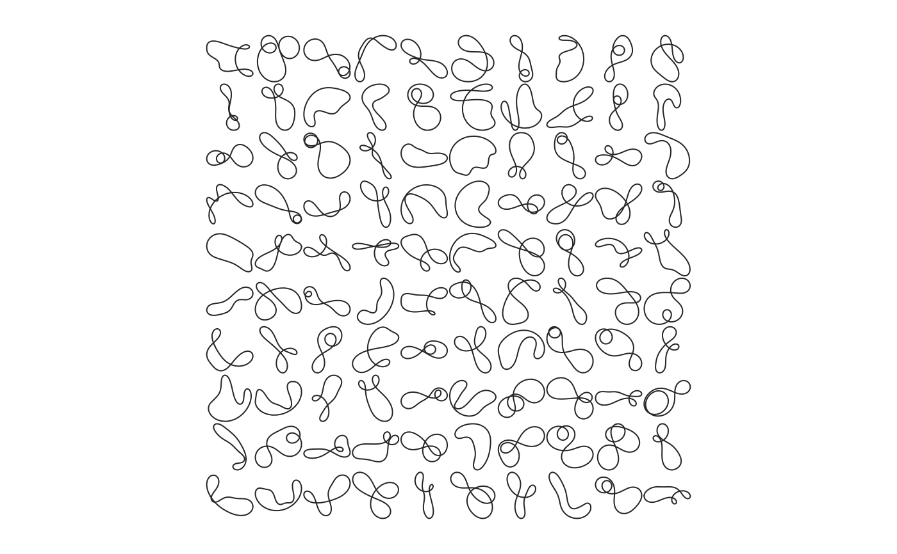

tfourier_shape calculates a 'Fourier tangent angle shape' given
Fourier coefficients (see Details) or can generate some 'tfourier'
shapes.
tfourier_shape(an, bn, ao = 0, nb.h, nb.pts = 80, alpha = 2, plot = TRUE)
| an |
|
|---|---|
| bn |
|
| ao |
|
| nb.h |
|
| nb.pts |
|
| alpha |
|
| plot |
|
A matrix of (x; y) coordinates.
Claude, J. (2008) Morphometrics with R, Use R! series, Springer 316 pp.
Other tfourier: tfourier_i,
tfourier
#> x y #> [1,] -0.068536123 0.03816985 #> [2,] 0.010421770 0.02861438 #> [3,] -0.063790622 0.05721817 #> [4,] -0.140579972 0.07793172 #> [5,] -0.183238239 0.14505793 #> [6,] -0.247181702 0.19235370 #> [7,] -0.320133871 0.22403393 #> [8,] -0.368197883 0.28740195 #> [9,] -0.418456077 0.34904422 #> [10,] -0.483991433 0.39410832 #> [11,] -0.527015593 0.46100060 #> [12,] -0.558482563 0.53404501 #> [13,] -0.615378810 0.58961904 #> [14,] -0.666002527 0.65096148 #> [15,] -0.703250243 0.72123426 #> [16,] -0.768466384 0.76675910 #> [17,] -0.843721723 0.79249409 #> [18,] -0.920086430 0.81472216 #> [19,] -0.990492372 0.77772677 #> [20,] -1.035089701 0.71187289 #> [21,] -1.107991534 0.68007700 #> [22,] -1.173409209 0.63484224 #> [23,] -1.172271234 0.55531639 #> [24,] -1.245117865 0.52339423 #> [25,] -1.169306190 0.54744097 #> [26,] -1.166890972 0.46794366 #> [27,] -1.134401707 0.39534818 #> [28,] -1.068636587 0.35062006 #> [29,] -1.007856315 0.29932275 #> [30,] -0.955597746 0.23936695 #> [31,] -0.898595892 0.18390125 #> [32,] -0.832707879 0.13935435 #> [33,] -0.769939719 0.09050956 #> [34,] -0.718591641 0.02977217 #> [35,] -0.653105984 -0.01536412 #> [36,] -0.579711689 -0.04600613 #> [37,] -0.541356302 -0.11568052 #> [38,] -0.489158357 -0.17568911 #> [39,] -0.526675851 -0.10555999 #> [40,] -0.483094002 -0.17209027 #> [41,] -0.411233403 -0.20617413 #> [42,] -0.384991638 -0.28125426 #> [43,] -0.346581120 -0.35089827 #> [44,] -0.281483742 -0.39659277 #> [45,] -0.223918101 -0.45147312 #> [46,] -0.163346561 -0.50301673 #> [47,] -0.086698985 -0.52424890 #> [48,] -0.009264515 -0.54240265 #> [49,] 0.061119622 -0.57943951 #> [50,] 0.129392040 -0.62023819 #> [51,] 0.196505793 -0.66291605 #> [52,] 0.256624481 -0.71498715 #> [53,] 0.315395180 -0.76857503 #> [54,] 0.379092808 -0.81620137 #> [55,] 0.442596932 -0.86408541 #> [56,] 0.501564226 -0.91745689 #> [57,] 0.558878373 -0.97259983 #> [58,] 0.616862632 -1.02703770 #> [59,] 0.683127662 -1.07102180 #> [60,] 0.761505112 -1.05750770 #> [61,] 0.789105491 -0.98291631 #> [62,] 0.836639557 -0.91914980 #> [63,] 0.850183366 -0.99752212 #> [64,] 0.787935223 -0.94801632 #> [65,] 0.760460379 -0.87337860 #> [66,] 0.699791505 -0.82194959 #> [67,] 0.638226839 -0.77159636 #> [68,] 0.596708767 -0.70375901 #> [69,] 0.552733618 -0.63748804 #> [70,] 0.492705339 -0.58531274 #> [71,] 0.437325328 -0.52822763 #> [72,] 0.414799359 -0.45195026 #> [73,] 0.364582422 -0.39027438 #> [74,] 0.378601540 -0.46856307 #> [75,] 0.344461362 -0.39672921 #> [76,] 0.268368346 -0.37358815 #> [77,] 0.341471182 -0.34225716 #> [78,] 0.264568188 -0.36254472 #> [79,] 0.260420375 -0.28311896 #> [80,] 0.189614910 -0.24689408tfourier_shape()#> x y #> [1,] -0.04868430 -0.05125121 #> [2,] -0.09071895 -0.11876968 #> [3,] -0.13198802 -0.18675880 #> [4,] -0.17149735 -0.25578537 #> [5,] -0.20818573 -0.32635179 #> [6,] -0.24091150 -0.39884096 #> [7,] -0.26844887 -0.47345563 #> [8,] -0.28949891 -0.55015342 #> [9,] -0.30272096 -0.62858067 #> [10,] -0.30678896 -0.70801056 #> [11,] -0.30047591 -0.78729360 #> [12,] -0.28276662 -0.86483093 #> [13,] -0.25299463 -0.93858243 #> [14,] -0.21099399 -1.00612206 #> [15,] -0.15725004 -1.06475008 #> [16,] -0.09302824 -1.11166719 #> [17,] -0.02045551 -1.14420723 #> [18,] 0.05747148 -1.16011448 #> [19,] 0.13697295 -1.15784023 #> [20,] 0.21367974 -1.13682299 #> [21,] 0.28293177 -1.09771018 #> [22,] 0.34016118 -1.04247930 #> [23,] 0.38132221 -0.97442472 #> [24,] 0.40331563 -0.89799210 #> [25,] 0.40434917 -0.81846483 #> [26,] 0.38417870 -0.74153103 #> [27,] 0.34418928 -0.67278148 #> [28,] 0.28729793 -0.61720243 #> [29,] 0.21768757 -0.57873097 #> [30,] 0.14040754 -0.55993065 #> [31,] 0.06089614 -0.56182653 #> [32,] -0.01550978 -0.58391251 #> [33,] -0.08401580 -0.62431771 #> [34,] -0.14071134 -0.68009649 #> [35,] -0.18278156 -0.74759280 #> [36,] -0.20858189 -0.82282576 #> [37,] -0.21758752 -0.90184826 #> [38,] -0.21024502 -0.98104260 #> [39,] -0.18776120 -1.05733240 #> [40,] -0.15186508 -1.12830510 #> [41,] -0.10457425 -1.19225221 #> [42,] -0.04798908 -1.24814295 #> [43,] 0.01587122 -1.29555093 #> [44,] 0.08518509 -1.33455406 #> [45,] 0.15839890 -1.36562484 #> [46,] 0.23425699 -1.38952477 #> [47,] 0.31179953 -1.40721119 #> [48,] 0.39033707 -1.41976150 #> [49,] 0.46940973 -1.42831547 #> [50,] 0.54873786 -1.43403423 #> [51,] 0.62816924 -1.43807292 #> [52,] 0.70762661 -1.44156323 #> [53,] 0.78705801 -1.44560164 #> [54,] 0.86639189 -1.45124002 #> [55,] 0.94549836 -1.45947547 #> [56,] 1.02415786 -1.47123719 #> [57,] 1.10203858 -1.48736945 #> [58,] 1.17868368 -1.50861056 #> [59,] 1.25350955 -1.53556877 #> [60,] 1.32581554 -1.56869728 #> [61,] 1.39480527 -1.60827093 #> [62,] 1.45961837 -1.65436776 #> [63,] 1.51937098 -1.70685853 #> [64,] 1.57320178 -1.76540680 #> [65,] 1.62031992 -1.82948127 #> [66,] 1.66005070 -1.89838062 #> [67,] 1.69187485 -1.97127012 #> [68,] 1.71545787 -2.04722733 #> [69,] 1.73066715 -2.12529354 #> [70,] 1.73757568 -2.20452691 #> [71,] 1.73645285 -2.28405298 #> [72,] 1.72774440 -2.36310877 #> [73,] 1.71204424 -2.44107775 #> [74,] 1.69006208 -2.51751360 #> [75,] 1.66259035 -2.59215247 #> [76,] 1.63047437 -2.66491386 #> [77,] 1.59458817 -2.73589158 #> [78,] 1.55581835 -2.80533621 #> [79,] 1.51505667 -2.87363072 #> [80,] 1.47320144 -2.94126056tfourier_shape(nb.h=6, alpha=0.4, nb.pts=500)#> x y #> [1,] 0.0001341089 -0.01125806 #> [2,] 0.0007369915 -0.02383517 #> [3,] 0.0024832071 -0.03630506 #> [4,] 0.0052322965 -0.04859284 #> [5,] 0.0088404579 -0.06065636 #> [6,] 0.0131650729 -0.07248196 #> [7,] 0.0180677039 -0.08407987 #> [8,] 0.0234157452 -0.09547924 #> [9,] 0.0290829761 -0.10672334 #> [10,] 0.0349492946 -0.11786486 #> [11,] 0.0408999215 -0.12896159 #> [12,] 0.0468243454 -0.14007232 #> [13,] 0.0526152602 -0.15125322 #> [14,] 0.0581677047 -0.16255444 #> [15,] 0.0633785778 -0.17401716 #> [16,] 0.0681466501 -0.18567104 #> [17,] 0.0723731435 -0.19753206 #> [18,] 0.0759628912 -0.20960107 #> [19,] 0.0788260312 -0.22186279 #> [20,] 0.0808801298 -0.23428566 #> [21,] 0.0820525759 -0.24682251 #> [22,] 0.0822830479 -0.25941196 #> [23,] 0.0815258268 -0.27198072 #> [24,] 0.0797517284 -0.28444667 #> [25,] 0.0769494444 -0.29672243 #> [26,] 0.0731261278 -0.30871949 #> [27,] 0.0683071217 -0.32035240 #> [28,] 0.0625348094 -0.33154291 #> [29,] 0.0558666437 -0.34222387 #> [30,] 0.0483724969 -0.35234241 #> [31,] 0.0401315314 -0.36186259 #> [32,] 0.0312288383 -0.37076704 #> [33,] 0.0217521086 -0.37905793 #> [34,] 0.0117885956 -0.38675700 #> [35,] 0.0014225976 -0.39390495 #> [36,] -0.0092663529 -0.40056029 #> [37,] -0.0202044607 -0.40679768 #> [38,] -0.0313237277 -0.41270608 #> [39,] -0.0425610783 -0.41838667 #> [40,] -0.0538565810 -0.42395074 #> [41,] -0.0651508405 -0.42951733 #> [42,] -0.0763816767 -0.43521080 #> [43,] -0.0874802516 -0.44115797 #> [44,] -0.0983668612 -0.44748481 #> [45,] -0.1089466692 -0.45431232 #> [46,] -0.1191057451 -0.46175144 #> [47,] -0.1287078579 -0.46989678 #> [48,] -0.1375925776 -0.47881917 #> [49,] -0.1455753182 -0.48855688 #> [50,] -0.1524500100 -0.49910609 #> [51,] -0.1579950664 -0.51041094 #> [52,] -0.1619831896 -0.52235423 #> [53,] -0.1641953010 -0.53474994 #> [54,] -0.1644384640 -0.54733915 #> [55,] -0.1625670943 -0.55979086 #> [56,] -0.1585060637 -0.57170956 #> [57,] -0.1522735754 -0.58265046 #> [58,] -0.1440010447 -0.59214322 #> [59,] -0.1339468167 -0.59972344 #> [60,] -0.1225005437 -0.60497035 #> [61,] -0.1101755619 -0.60754756 #> [62,] -0.0975876983 -0.60724274 #> [63,] -0.0854205481 -0.60400119 #> [64,] -0.0743792000 -0.59794843 #> [65,] -0.0651363537 -0.58939758 #> [66,] -0.0582763962 -0.57883878 #> [67,] -0.0542439216 -0.56691040 #> [68,] -0.0533031317 -0.55435404 #> [69,] -0.0555134489 -0.54195800 #> [70,] -0.0607246412 -0.53049543 #> [71,] -0.0685921305 -0.52066436 #> [72,] -0.0786103921 -0.51303667 #> [73,] -0.0901599678 -0.50802124 #> [74,] -0.1025620107 -0.50584488 #> [75,] -0.1151337132 -0.50655165 #> [76,] -0.1272384548 -0.51001899 #> [77,] -0.1383258692 -0.51598694 #> [78,] -0.1479589241 -0.52409567 #> [79,] -0.1558271610 -0.53392614 #> [80,] -0.1617470780 -0.54503927 #> [81,] -0.1656520090 -0.55701002 #> [82,] -0.1675746338 -0.56945392 #> [83,] -0.1676254465 -0.58204537 #> [84,] -0.1659702207 -0.59452766 #> [85,] -0.1628089104 -0.60671591 #> [86,] -0.1583576706 -0.61849443 #> [87,] -0.1528349328 -0.62981020 #> [88,] -0.1464518204 -0.64066391 #> [89,] -0.1394066954 -0.65110007 #> [90,] -0.1318833031 -0.66119689 #> [91,] -0.1240517978 -0.67105665 #> [92,] -0.1160718636 -0.68079666 #> [93,] -0.1080971419 -0.69054095 #> [94,] -0.1002802069 -0.70041226 #> [95,] -0.0927773708 -0.71052436 #> [96,] -0.0857526346 -0.72097426 #> [97,] -0.0793801357 -0.73183420 #> [98,] -0.0738444918 -0.74314366 #> [99,] -0.0693385213 -0.75490136 #> [100,] -0.0660579685 -0.76705805 #> [101,] -0.0641930838 -0.77951074 #> [102,] -0.0639172278 -0.79209927 #> [103,] -0.0653730635 -0.80460638 #> [104,] -0.0686573410 -0.81676207 #> [105,] -0.0738057046 -0.82825301 #> [106,] -0.0807792763 -0.83873711 #> [107,] -0.0894549174 -0.84786293 #> [108,] -0.0996209534 -0.85529253 #> [109,] -0.1109797396 -0.86072624 #> [110,] -0.1231577564 -0.86392672 #> [111,] -0.1357230250 -0.86473990 #> [112,] -0.1482086591 -0.86311012 #> [113,] -0.1601404847 -0.85908784 #> [114,] -0.1710660188 -0.85282845 #> [115,] -0.1805818375 -0.84458246 #> [116,] -0.1883565364 -0.83467785 #> [117,] -0.1941470691 -0.82349675 #> [118,] -0.1978071328 -0.81144888 #> [119,] -0.1992873067 -0.79894463 #> [120,] -0.1986276453 -0.78637037 #> [121,] -0.1959442413 -0.77406807 #> [122,] -0.1914117832 -0.76232056 #> [123,] -0.1852443124 -0.75134287 #> [124,] -0.1776762455 -0.74127949 #> [125,] -0.1689453594 -0.73220652 #> [126,] -0.1592789277 -0.72413761 #> [127,] -0.1488836627 -0.71703228 #> [128,] -0.1379396286 -0.71080530 #> [129,] -0.1265979175 -0.70533603 #> [130,] -0.1149816299 -0.70047712 #> [131,] -0.1031895796 -0.69606183 #> [132,] -0.0913021146 -0.69191027 #> [133,] -0.0793884767 -0.68783444 #> [134,] -0.0675151755 -0.68364254 #> [135,] -0.0557548847 -0.67914335 #> [136,] -0.0441953597 -0.67415089 #> [137,] -0.0329478085 -0.66849052 #> [138,] -0.0221540230 -0.66200658 #> [139,] -0.0119914175 -0.65457229 #> [140,] -0.0026749591 -0.64610171 #> [141,] 0.0055451268 -0.63656350 #> [142,] 0.0123909702 -0.62599554 #> [143,] 0.0175708531 -0.61451878 #> [144,] 0.0207995599 -0.60234822 #> [145,] 0.0218248620 -0.58979848 #> [146,] 0.0204586716 -0.57728126 #> [147,] 0.0166101942 -0.56529225 #> [148,] 0.0103172572 -0.55438600 #> [149,] 0.0017711400 -0.54513878 #> [150,] -0.0086700274 -0.53810108 #> [151,] -0.0204836589 -0.53374386 #> [152,] -0.0330037536 -0.53240429 #> [153,] -0.0454610687 -0.53423801 #> [154,] -0.0570399931 -0.53918530 #> [155,] -0.0669467253 -0.54695730 #> [156,] -0.0744809548 -0.55704603 #> [157,] -0.0791019621 -0.56875900 #> [158,] -0.0804802771 -0.58127489 #> [159,] -0.0785278215 -0.59371414 #> [160,] -0.0734025448 -0.60521540 #> [161,] -0.0654873505 -0.61500809 #> [162,] -0.0553468663 -0.62247253 #> [163,] -0.0436686234 -0.62718059 #> [164,] -0.0311969401 -0.62891390 #> [165,] -0.0186680408 -0.62765934 #> [166,] -0.0067537887 -0.62358530 #> [167,] 0.0039807468 -0.61700374 #> [168,] 0.0131033061 -0.60832467 #> [169,] 0.0203240357 -0.59800923 #> [170,] 0.0254907587 -0.58652654 #> [171,] 0.0285733749 -0.57431816 #> [172,] 0.0296414204 -0.56177198 #> [173,] 0.0288386929 -0.54920604 #> [174,] 0.0263582393 -0.53686122 #> [175,] 0.0224201161 -0.52490135 #> [176,] 0.0172533965 -0.51341866 #> [177,] 0.0110830458 -0.50244260 #> [178,] 0.0041216252 -0.49195042 #> [179,] -0.0034346747 -0.48187820 #> [180,] -0.0114064276 -0.47213149 #> [181,] -0.0196286607 -0.46259513 #> [182,] -0.0279467096 -0.45314223 #> [183,] -0.0362110650 -0.44364236 #> [184,] -0.0442719722 -0.43396925 #> [185,] -0.0519744830 -0.42400840 #> [186,] -0.0591546139 -0.41366466 #> [187,] -0.0656372224 -0.40287008 #> [188,] -0.0712361542 -0.39159181 #> [189,] -0.0757571278 -0.37983988 #> [190,] -0.0790036657 -0.36767406 #> [191,] -0.0807861529 -0.35520931 #> [192,] -0.0809337878 -0.34261862 #> [193,] -0.0793088044 -0.33013236 #> [194,] -0.0758219277 -0.31803323 #> [195,] -0.0704476294 -0.30664621 #> [196,] -0.0632374601 -0.29632339 #> [197,] -0.0543296140 -0.28742409 #> [198,] -0.0439530090 -0.28029154 #> [199,] -0.0324245546 -0.27522775 #> [200,] -0.0201389349 -0.27246899 #> [201,] -0.0075510687 -0.27216427 #> [202,] 0.0048476738 -0.27435936 #> [203,] 0.0165575748 -0.27898812 #> [204,] 0.0271004337 -0.28587255 #> [205,] 0.0360483275 -0.29473158 #> [206,] 0.0430484830 -0.30519796 #> [207,] 0.0478419364 -0.31684141 #> [208,] 0.0502744219 -0.32919578 #> [209,] 0.0502988697 -0.34178731 #> [210,] 0.0479698578 -0.35416159 #> [211,] 0.0434312025 -0.36590671 #> [212,] 0.0368984810 -0.37667104 #> [213,] 0.0286385896 -0.38617480 #> [214,] 0.0189484590 -0.39421523 #> [215,] 0.0081348046 -0.40066598 #> [216,] -0.0035036256 -0.40547162 #> [217,] -0.0156903539 -0.40863877 #> [218,] -0.0281815830 -0.41022510 #> [219,] -0.0407727206 -0.41032745 #> [220,] -0.0533013704 -0.40907041 #> [221,] -0.0656473609 -0.40659579 #> [222,] -0.0777304930 -0.40305388 #> [223,] -0.0895066914 -0.39859648 #> [224,] -0.1009631825 -0.39337192 #> [225,] -0.1121132118 -0.38752179 #> [226,] -0.1229906918 -0.38117926 #> [227,] -0.1336450445 -0.37446867 #> [228,] -0.1441363955 -0.36750600 #> [229,] -0.1545311932 -0.36039999 #> [230,] -0.1648982646 -0.35325359 #> [231,] -0.1753052873 -0.34616549 #> [232,] -0.1858156439 -0.33923154 #> [233,] -0.1964856314 -0.33254584 #> [234,] -0.2073620112 -0.32620143 #> [235,] -0.2184799124 -0.32029047 #> [236,] -0.2298611207 -0.31490388 #> [237,] -0.2415128058 -0.31013047 #> [238,] -0.2534267505 -0.30605553 #> [239,] -0.2655791441 -0.30275908 #> [240,] -0.2779309909 -0.30031386 #> [241,] -0.2904291586 -0.29878316 #> [242,] -0.3030080584 -0.29821880 #> [243,] -0.3155919061 -0.29865926 #> [244,] -0.3280974741 -0.30012827 #> [245,] -0.3404372017 -0.30263393 #> [246,] -0.3525225068 -0.30616842 #> [247,] -0.3642671196 -0.31070839 #> [248,] -0.3755902620 -0.31621599 #> [249,] -0.3864195069 -0.32264053 #> [250,] -0.3966931797 -0.32992056 #> [251,] -0.4063622054 -0.33798636 #> [252,] -0.4153913432 -0.34676257 #> [253,] -0.4237598025 -0.35617087 #> [254,] -0.4314612717 -0.36613253 #> [255,] -0.4385034260 -0.37657069 #> [256,] -0.4449070091 -0.38741234 #> [257,] -0.4507045912 -0.39858979 #> [258,] -0.4559391135 -0.41004173 #> [259,] -0.4606623193 -0.42171386 #> [260,] -0.4649331592 -0.43355899 #> [261,] -0.4688162393 -0.44553684 #> [262,] -0.4723803579 -0.45761344 #> [263,] -0.4756971590 -0.46976030 #> [264,] -0.4788399083 -0.48195334 #> [265,] -0.4818823864 -0.49417179 #> [266,] -0.4848978805 -0.50639693 #> [267,] -0.4879582502 -0.51861091 #> [268,] -0.4911330459 -0.53079565 #> [269,] -0.4944886556 -0.54293184 #> [270,] -0.4980874692 -0.55499815 #> [271,] -0.5019870546 -0.56697064 #> [272,] -0.5062393526 -0.57882244 #> [273,] -0.5108899094 -0.59052370 #> [274,] -0.5159771727 -0.60204182 #> [275,] -0.5215318888 -0.61334192 #> [276,] -0.5275766370 -0.62438765 #> [277,] -0.5341255419 -0.63514215 #> [278,] -0.5411841957 -0.64556916 #> [279,] -0.5487498146 -0.65563438 #> [280,] -0.5568116407 -0.66530672 #> [281,] -0.5653515827 -0.67455965 #> [282,] -0.5743450752 -0.68337238 #> [283,] -0.5837621162 -0.69173100 #> [284,] -0.5935684313 -0.69962932 #> [285,] -0.6037266996 -0.70706954 #> [286,] -0.6141977722 -0.71406267 #> [287,] -0.6249418109 -0.72062870 #> [288,] -0.6359192791 -0.72679656 #> [289,] -0.6470917253 -0.73260377 #> [290,] -0.6584223091 -0.73809604 #> [291,] -0.6698760348 -0.74332666 #> [292,] -0.6814196714 -0.74835575 #> [293,] -0.6930213551 -0.75324943 #> [294,] -0.7046498821 -0.75807899 #> [295,] -0.7162737176 -0.76291982 #> [296,] -0.7278597590 -0.76785042 #> [297,] -0.7393719046 -0.77295118 #> [298,] -0.7507694968 -0.77830302 #> [299,] -0.7620057184 -0.78398584 #> [300,] -0.7730260400 -0.79007680 #> [301,] -0.7837668284 -0.79664815 #> [302,] -0.7941542411 -0.80376496 #> [303,] -0.8041035423 -0.81148238 #> [304,] -0.8135189771 -0.81984281 #> [305,] -0.8222943412 -0.82887277 #> [306,] -0.8303143608 -0.83857981 #> [307,] -0.8374569696 -0.84894949 #> [308,] -0.8435965212 -0.85994281 #> [309,] -0.8486079085 -0.87149414 #> [310,] -0.8523714862 -0.88351008 #> [311,] -0.8547786055 -0.89586941 #> [312,] -0.8557374818 -0.90842440 #> [313,] -0.8551790423 -0.92100356 #> [314,] -0.8530623404 -0.93341593 #> [315,] -0.8493791057 -0.94545673 #> [316,] -0.8441570092 -0.95691435 #> [317,] -0.8374612883 -0.96757805 #> [318,] -0.8293944790 -0.97724624 #> [319,] -0.8200941419 -0.98573452 #> [320,] -0.8097286305 -0.99288318 #> [321,] -0.7984911161 -0.99856346 #> [322,] -0.7865922339 -1.00268217 #> [323,] -0.7742518339 -1.00518452 #> [324,] -0.7616903850 -1.00605471 #> [325,] -0.7491206024 -1.00531458 #> [326,] -0.7367398184 -1.00302037 #> [327,] -0.7247235316 -0.99925791 #> [328,] -0.7132204413 -0.99413677 #> [329,] -0.7023491286 -0.98778367 #> [330,] -0.6921963997 -0.98033590 #> [331,] -0.6828171783 -0.97193486 #> [332,] -0.6742357281 -0.96272042 #> [333,] -0.6664479208 -0.95282612 #> [334,] -0.6594242341 -0.94237552 #> [335,] -0.6531131673 -0.93147975 #> [336,] -0.6474447952 -0.92023623 #> [337,] -0.6423342350 -0.90872843 #> [338,] -0.6376848642 -0.89702670 #> [339,] -0.6333911995 -0.88518982 #> [340,] -0.6293414101 -0.87326730 #> [341,] -0.6254195009 -0.86130211 #> [342,] -0.6215072449 -0.84933376 #> [343,] -0.6174859825 -0.83740159 #> [344,] -0.6132384205 -0.82554809 #> [345,] -0.6086505698 -0.81382210 #> [346,] -0.6036139492 -0.80228175 #> [347,] -0.5980281533 -0.79099697 #> [348,] -0.5918038393 -0.78005142 #> [349,] -0.5848661325 -0.76954355 #> [350,] -0.5771583760 -0.75958675 #> [351,] -0.5686460808 -0.75030839 #> [352,] -0.5593208480 -0.74184746 #> [353,] -0.5492039732 -0.73435106 #> [354,] -0.5383493846 -0.72796943 #> [355,] -0.5268455495 -0.72284996 #> [356,] -0.5148159908 -0.71913016 #> [357,] -0.5024181156 -0.71693018 #> [358,] -0.4898401555 -0.71634524 #> [359,] -0.4772961587 -0.71743857 #> [360,] -0.4650191380 -0.72023535 #> [361,] -0.4532526622 -0.72471835 #> [362,] -0.4422413390 -0.73082556 #> [363,] -0.4322207782 -0.73845023 #> [364,] -0.4234077050 -0.74744339 #> [365,] -0.4159909113 -0.75761877 #> [366,] -0.4101236812 -0.76875982 #> [367,] -0.4059182074 -0.78062831 #> [368,] -0.4034423446 -0.79297405 #> [369,] -0.4027188437 -0.80554480 #> [370,] -0.4037270005 -0.81809593 #> [371,] -0.4064064615 -0.83039909 #> [372,] -0.4106627752 -0.84224945 #> [373,] -0.4163741769 -0.85347118 #> [374,] -0.4233990497 -0.86392098 #> [375,] -0.4315835202 -0.87348977 #> [376,] -0.4407687045 -0.88210253 #> [377,] -0.4507972174 -0.88971673 #> [378,] -0.4615186652 -0.89631959 #> [379,] -0.4727939667 -0.90192449 #> [380,] -0.4844984468 -0.90656694 #> [381,] -0.4965237458 -0.91030049 #> [382,] -0.5087786501 -0.91319264 #> [383,] -0.5211889989 -0.91532113 #> [384,] -0.5336968437 -0.91677063 #> [385,] -0.5462590414 -0.91762994 #> [386,] -0.5588454545 -0.91798971 #> [387,] -0.5714369124 -0.91794059 #> [388,] -0.5840230674 -0.91757191 #> [389,] -0.5966002527 -0.91697055 #> [390,] -0.6091694312 -0.91622023 #> [391,] -0.6217342999 -0.91540090 #> [392,] -0.6342996037 -0.91458827 #> [393,] -0.6468696949 -0.91385340 #> [394,] -0.6594473662 -0.91326229 #> [395,] -0.6720329768 -0.91287548 #> [396,] -0.6846238809 -0.91274756 #> [397,] -0.6972141587 -0.91292681 #> [398,] -0.7097946452 -0.91345462 #> [399,] -0.7223532344 -0.91436515 #> [400,] -0.7348754348 -0.91568489 #> [401,] -0.7473451336 -0.91743242 #> [402,] -0.7597455236 -0.91961818 #> [403,] -0.7720601363 -0.92224449 #> [404,] -0.7842739209 -0.92530565 #> [405,] -0.7963743058 -0.92878817 #> [406,] -0.8083521847 -0.93267116 #> [407,] -0.8202027693 -0.93692685 #> [408,] -0.8319262621 -0.94152108 #> [409,] -0.8435283126 -0.94641389 #> [410,] -0.8550202256 -0.95156007 #> [411,] -0.8664189064 -0.95690959 #> [412,] -0.8777465317 -0.96240796 #> [413,] -0.8890299427 -0.96799651 #> [414,] -0.9002997626 -0.97361241 #> [415,] -0.9115892426 -0.97918869 #> [416,] -0.9229328405 -0.98465404 #> [417,] -0.9343645421 -0.98993262 #> [418,] -0.9459159342 -0.99494386 #> [419,] -0.9576140473 -0.99960234 #> [420,] -0.9694789962 -1.00381781 #> [421,] -0.9815214623 -1.00749561 #> [422,] -0.9937400855 -1.01053740 #> [423,] -1.0061188597 -1.01284243 #> [424,] -1.0186246595 -1.01430947 #> [425,] -1.0312050595 -1.01483934 #> [426,] -1.0437866370 -1.01433820 #> [427,] -1.0562739721 -1.01272151 #> [428,] -1.0685495688 -1.00991849 #> [429,] -1.0804749046 -1.00587700 #> [430,] -1.0918927814 -1.00056859 #> [431,] -1.1026310808 -0.99399316 #> [432,] -1.1125079328 -0.98618323 #> [433,] -1.1213381850 -0.97720694 #> [434,] -1.1289409266 -0.96716973 #> [435,] -1.1351476869 -0.95621421 #> [436,] -1.1398108091 -0.94451795 #> [437,] -1.1428114178 -0.93228915 #> [438,] -1.1440663651 -0.91976029 #> [439,] -1.1435335713 -0.90718002 #> [440,] -1.1412152713 -0.89480372 #> [441,] -1.1371588302 -0.88288346 #> [442,] -1.1314549940 -0.87165789 #> [443,] -1.1242336618 -0.86134287 #> [444,] -1.1156574796 -0.85212353 #> [445,] -1.1059137448 -0.84414814 #> [446,] -1.0952052383 -0.83752431 #> [447,] -1.0837406632 -0.83231751 #> [448,] -1.0717253621 -0.82855191 #> [449,] -1.0593529035 -0.82621321 #> [450,] -1.0467980041 -0.82525315 #> [451,] -1.0342110916 -0.82559499 #> [452,] -1.0217146457 -0.82713968 #> [453,] -1.0094013015 -0.82977194 #> [454,] -0.9973335684 -0.83336597 #> [455,] -0.9855449349 -0.83779037 #> [456,] -0.9740420811 -0.84291205 #> [457,] -0.9628079154 -0.84859894 #> [458,] -0.9518051804 -0.85472161 #> [459,] -0.9409804233 -0.86115370 #> [460,] -0.9302681876 -0.86777150 #> [461,] -0.9195953513 -0.87445265 #> [462,] -0.9088855888 -0.88107445 #> [463,] -0.8980639798 -0.88751184 #> [464,] -0.8870618028 -0.89363551 #> [465,] -0.8758215456 -0.89931035 #> [466,] -0.8643021275 -0.90439466 #> [467,] -0.8524842604 -0.90874038 #> [468,] -0.8403757867 -0.91219467 #> [469,] -0.8280167206 -0.91460313 #> [470,] -0.8154836034 -0.91581482 #> [471,] -0.8028926780 -0.91568903 #> [472,] -0.7904013140 -0.91410377 #> [473,] -0.7782070941 -0.91096558 #> [474,] -0.7665440316 -0.90622004 #> [475,] -0.7556755346 -0.89986213 #> [476,] -0.7458839831 -0.89194552 #> [477,] -0.7374571159 -0.88258950 #> [478,] -0.7306718173 -0.87198257 #> [479,] -0.7257762946 -0.86038166 #> [480,] -0.7229719931 -0.84810635 #> [481,] -0.7223968332 -0.83552794 #> [482,] -0.7241114252 -0.82305367 #> [483,] -0.7280897822 -0.81110713 #> [484,] -0.7342157029 -0.80010621 #> [485,] -0.7422854673 -0.79044049 #> [486,] -0.7520168446 -0.78245002 #> [487,] -0.7630637377 -0.77640739 #> [488,] -0.7750351894 -0.77250463 #> [489,] -0.7875170285 -0.77084604 #> [490,] -0.8000942160 -0.77144735 #> [491,] -0.8123719697 -0.77424092 #> [492,] -0.8239940013 -0.77908608 #> [493,] -0.8346566293 -0.78578351 #> [494,] -0.8441180646 -0.79409185 #> [495,] -0.8522027190 -0.80374512 #> [496,] -0.8588008855 -0.81446945 #> [497,] -0.8638645238 -0.82599798 #> [498,] -0.8674001279 -0.83808296 #> [499,] -0.8694597451 -0.85050492 #> [500,] -0.8701311830 -0.86307856panel(Out(a2l(replicate(100, coo_force2close(tfourier_shape(nb.h=6, alpha=2, nb.pts=200, plot=FALSE)))))) # biological shapes